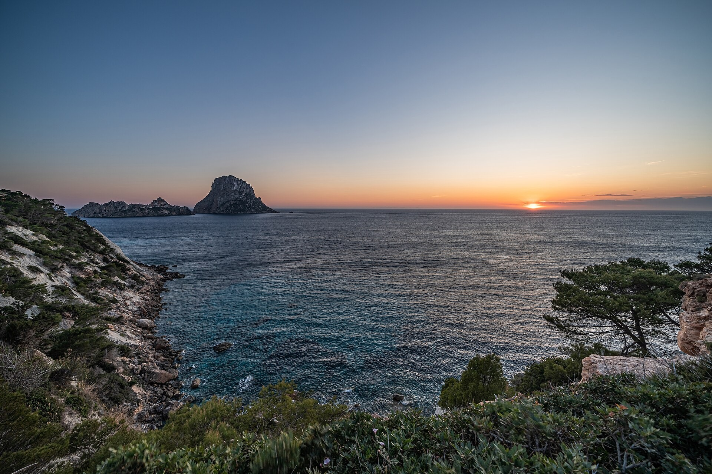
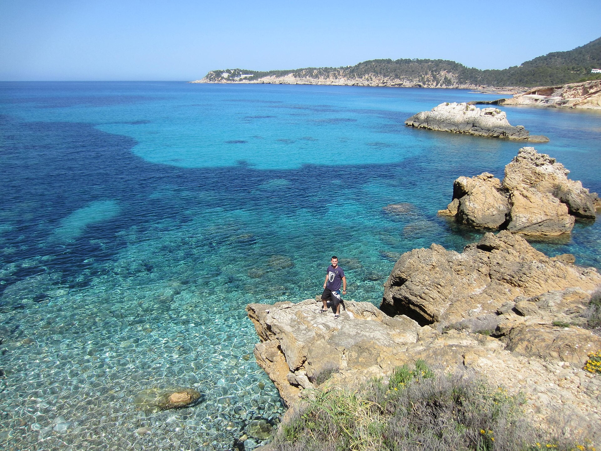
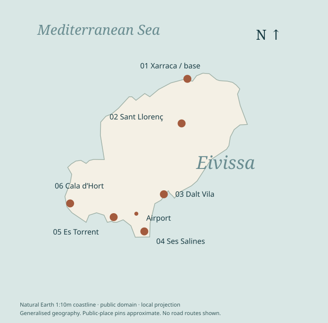
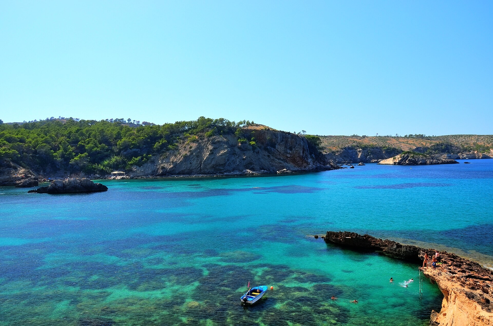
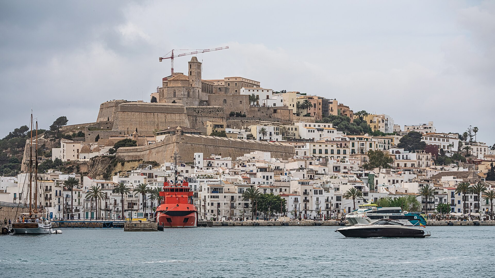
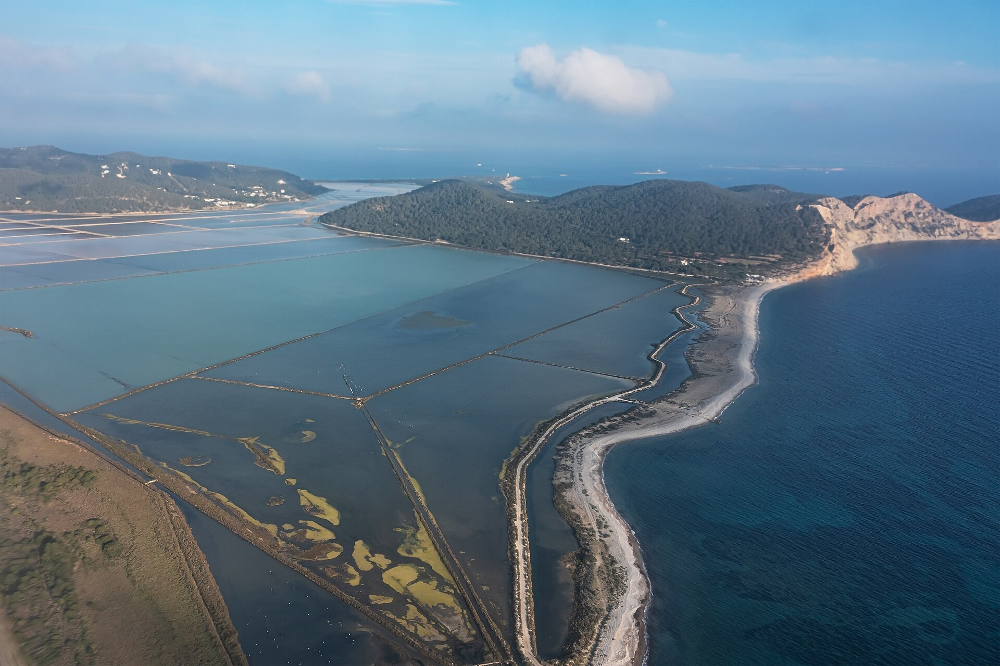
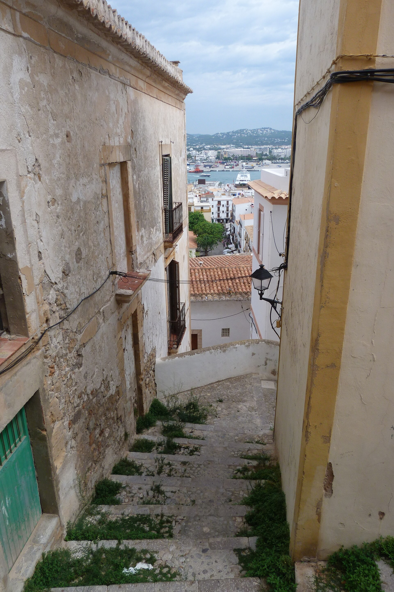

Spend on a beautiful base, a good captain and the freedom to change your mind.
At the edge of Ibiza, the land does not dissolve into the sea. It breaks into pale shelves, little inlets and hard silhouettes. Look long enough and blue becomes a geography: shallow green over sand, dark patches over living meadow, a deeper band beyond the bay.
This edition begins in the north. There are five nights in one room, a day for the old town, another for the southern coast, and one uncommitted day at sea. The generous budget buys continuity: the same bed, a driver for the long outings, no race back to a ferry.
It leaves room for Ibiza’s other scales too: a bowl of rice after the fish, a narrow passage inside the walls, salt pans drawn in long, low rectangles.

Cala Xarraca. Jjuanii / CC BY-SA 3.0. Cropped.
North for the base. East for the walls.
South for one long, salt-edged day.


Cala Xarraca. pazzosi / CC BY-SA 3.0. Cropped. This is the public bay, not a hotel photograph.
Have a car waiting at the airport and go straight north. Use the first afternoon for the room and the water, if conditions allow. Keep dinner at the hotel; the first evening is a poor place to spend an hour crossing the island.
Planning buffer: allow about 50–70 minutes from the airport to the Xarraca area. This is an editorial driving allowance, not a timed route result. Confirm it with the transfer provider.
Begin with a swim near the base, then make Sant Llorenç the day’s one inland excursion. Choose La Paloma for dinner in the garden; its evening menu is Italian-inspired, while the daytime café follows a different, Middle Eastern direction.
Keep it light: one return drive, roughly 25–35 minutes each way by planning allowance. If the sea is rough, extend breakfast and move a spa treatment here. No cliff scramble is needed to make the day.
Six Senses Ibiza · Sea View Cave Suite
The Xarraca coast, by pazzosi / CC BY-SA 3.0. A destination image; the suite is shown in the official linked gallery.
The cave idea is most persuasive at the scale of two people: a sheltered room, an open threshold, the sea beyond it. This category is the starting point for the trip, rather than a promise that the largest suite will make the best holiday.
The hotel lists a 63 m² interior and a 26 m² terrace, one bedroom and a maximum of two guests. It also lists a walk-in shower and a bathtub in the bedroom. That last detail matters if bathroom privacy is important.
The official images show the terrace opening through broad timber-framed doors. Ask for the exact room category and floor plan before paying; photographs are evidence of design, not of the particular view you will be assigned.
It keeps the northern sea close and puts the resort’s services within reach. The trade-off is a longer drive to the south and Ibiza Town.
Before accepting a quoteConfirm five-night total, taxes, breakfast, cancellation, room access, terrace privacy and any event sound near the assigned suite.
A garden-facing suite with a terrace and king bed on Atzaró’s inland estate. The official suite page includes breakfast, spa facilities and yoga/wellness classes among its listed inclusions. Reconfirm those against the selected rate.
Choose it for: the estate and garden atmosphere. Official photographs show pale walls, substantial timber beds and sheltered terraces.
Give up: the immediate sea horizon. Ask which suite has a bath as well as a shower, and how far it sits from event areas.
Inspect the suite gallery ↗
The strongest villa-style option for this northern route: a private garden and pool, a fully appointed kitchen, independent entrance and bedrooms with individual bathrooms. Hotel services remain part of the proposition.
Choose it for: a house-shaped day, cooking and private outdoor space. The official exterior shows a lawn, pool and outdoor dining.
The trade-off: two adults pay for three bedrooms. Obtain a separate whole-stay quote; it is not assumed to fit the €10,000 lodging allocation.
An eight-bedroom, eight-bathroom finca above the Morna Valley, with multiple living rooms and terraces. Its gallery supports the appeal of whitewashed spaces and broad outdoor living. For two, it is deliberate excess: consider only for exclusive use as a new budget exercise. Minimum stay, staffing, fees and deposit remain unverified. Official villa gallery ↗

Dalt Vila from the harbour. A.Savin, Wikipedia / Free Art License 1.3. Cropped.
From the harbour, Dalt Vila reads as a single object: stone stacked above the water. Inside, it becomes a sequence of corners. The grand outline and the small passage tell different stories.
The Renaissance defences were built to protect the communications between Spain and Italy. UNESCO identifies their influence on later Spanish fortifications in the Americas. Their scale belongs to a network much larger than this island.
Within that military shell, the street pattern retains a medieval intimacy. Let the walk move between the two: broad views from the fortifications, then the close grain of doors and lanes.
Keep the morning at the hotel. Leave for town after lunch; allow 45–60 minutes by car. Enter via Portal de ses Taules, wander upward toward the cathedral square, then descend at an unhurried pace. Allow around two hours on foot, more for stops.
Choose Corsario for a dinner within Dalt Vila. Its official site describes a Mediterranean menu and a terrace overlooking the port. Confirm seasonal opening and the current menu before fixing this day.
Ground truth: gradients and cobbles make this more demanding than the distance suggests. Take grippy shoes; a driver cannot remove the climb inside the old town.
The rice arrives after the fish.
That is a reason to leave space.
A fish preparation dressed with all i oli, followed by arroz a banda. Think of it as a meal in two movements. Ask about the catch, the number of diners and whether the rice is included before ordering.
Twice-baked bread, softened for a salad with ingredients such as tomato, onion and dried fish. A useful reminder that texture can be the subject of a dish, not merely its garnish.
Fresh cheese and mint in a tart. A finishing note that belongs to the island’s own repertoire, alongside greixonera, made with leftover ensaïmada.
La Paloma · Sant Llorenç
Garden dinner on the northern day. Book the evening restaurant if you want its Italian-inspired menu; the café is a different offering.
Es Torrent · South coast
The substantial seafood lunch on Day 4. Its published 2026 menu includes bullit de peix and rice dishes. Confirm advance ordering and any minimum number of diners.
Corsario · Dalt Vila
The town evening, with the port below. A terrace request is a request, not a seating guarantee.
Our spending rule
Ask for the weight and price of whole fish before it is cooked. A lavish lunch is more enjoyable when the bill is understood.
Dietary restrictions should be checked directly at reservation. Fish stock, shellfish, dairy and gluten can appear in dishes whose short menu description does not tell the whole story.

Ses Salines from above. A.Savin, Wikipedia / Free Art License 1.3. Cropped.
From above, Ses Salines looks measured: water in rectangles, causeways drawn between them, the sea curved around the edge. The order is human. The surrounding dunes, pines and junipers belong to a larger coastal system.
The beach is part of the Ses Salines natural park, where salt marshes provide habitat for birds. Resist treating it as an empty stage for a photograph. Stay on permitted paths, leave vegetation undisturbed and look from the edges.
Make the southern journey once and give it the whole day. A long lunch is an anchor; a second beach is optional.
Arrange the driver’s full waiting time and return in advance. This is the itinerary’s longest road day; a late-night event does not belong after it.
A beautiful anchorage is also somebody’s habitat.
Original conceptual illustration. Not to scale; not a seabed survey or navigation chart.
Posidonia is a seagrass, not seaweed. UNESCO includes its underwater meadows in Ibiza’s mixed cultural and natural World Heritage site. The living landscape below the surface is as much a part of the destination as the fortifications above it.
A private boat does not buy permission to drop an anchor anywhere. Balearic rules generally prohibit anchoring on the plant. The entire operation, including the chain, must respect the meadow and local restrictions.
Ask the captain to choose the route for that day’s wind and sea state. The ambition is several good hours on the water, not a compulsory lap of a famous island.
Request a licensed, insured skippered charter for two. Have the operator state vessel, departure port, hours, fuel basis, tax, drinks, lunch arrangements, towels, cancellation and weather policy.
The €3,000 allocation on page 12 is a spending envelope, not an observed charter price. Confirm whether transfers and mooring charges sit inside it.
If the sea says no: exchange this day with Day 2 where reservations allow, or stay ashore for a spa afternoon and a second northern dinner. Retain the unused boat allowance.
On departure day, keep the morning free of a distant reservation. Confirm checkout, luggage storage and the airport transfer the previous evening. Work backwards from the airline’s requested airport arrival time, then add the north-to-airport driving buffer.
There are five hotel nights: after Days 1, 2, 3, 4 and 5. Day 6 ends at departure. This sample has no flights, dates or reservations hidden in it.
1. The room. Choose a category and obtain the five-night all-in quote, terms and actual room layout.
2. The long outings. A town return, a southern day with waiting, and airport transfers. Define overtime and cancellation.
3. The tables. La Paloma, Corsario and Es Torrent. Match them to the route, then check seasonal opening.
4. The boat. Hold flexibility around sea conditions; agree the weather decision process before paying.

Carrer de la Sagrada Família, Dalt Vila. steve p2008 / CC BY 2.0. Cropped.
Swimwear, grippy walking shoes, sun protection, a light layer for the boat, water and a charged phone. Download the guide and a road map before leaving Wi-Fi.
On the roadUse a driver for dinners involving alcohol. Every drive time in this guide is an approximate planning buffer, not a navigation instruction.
€24,000 buys a generous plan.
It is not a bookable package.
Every line is an editorial estimate chosen for this synthetic brief. No date-specific rates, tax calculations or availability were obtained. Flights, shopping and refundable security deposits are excluded.
The room and the driver make the whole trip work. Protect those first. If the final hotel quote is higher, decide whether the boat or room category matters more before increasing the total.
Ask Six Senses and Atzaró to quote the same five nights for two adults, with breakfast and taxes identified. For a villa, add cleaning, service or booking fees, pool arrangements, staffing and the refundable deposit separately.
If a tax or transfer is included in a supplier quote, move that amount out of the reserve. Do not count it twice. The residence and Ca s’Uzina require a fresh budget; neither has been priced into this one.
Primary sources checked 29 October 2026. Seasonal operations, menus and room offers can change. The guide specifies no travel year; reconfirm against actual dates before purchase.
Culture and ecology. UNESCO: Ibiza, Biodiversity and Culture; Eivissa municipal cultural heritage; Balearic tourism: Ses Salines; Balearic government: Posidonia and buoy rules.
Stays. Six Senses Sea View Cave Suite; Three Bedroom Residence; Atzaró Suites; Ca s’Uzina gallery. Official room and shared-space images reviewed; commercial property images not reproduced.
Food. Eivissa municipal gastronomy; La Paloma; Es Torrent, including its 2026 menu; Corsario. No future menus or seats are guaranteed.
Map. Coastline derived from Natural Earth, 1:10m public-domain data. Public-place coordinates are approximate editorial pins. The generalised outline is not suitable for navigation.
Type. Cormorant Garamond and DM Sans, SIL Open Font License 1.1. Local font files support offline reading. Font licence texts accompany the assets.
Editorial method. Original writing and design for a fictional two-adult brief. No private itinerary, personal data, reservations, home location or flights were used. All photographs show real named places. The seagrass drawing is a labelled original concept.
xarraca.jpg · pazzosi · source image · CC BY-SA 3.0. Cropped/re-encoded; image adaptations retain the source licence.
xarraca-rocks.jpg · Jjuanii · source image · CC BY-SA 3.0. Cropped/re-encoded; image adaptations retain the source licence.
dalt-vila.jpg · A.Savin, Wikipedia · source image · FAL. Cropped/re-encoded; image adaptations retain the source licence.
dalt-street.jpg · steve p2008 · source image · CC BY 2.0. Cropped/re-encoded; image adaptations retain the source licence.
salt-pans.jpg · A.Savin, Wikipedia · source image · FAL. Cropped/re-encoded; image adaptations retain the source licence.
salines-air.jpg · A.Savin, Wikipedia · source image · FAL. Cropped/re-encoded; image adaptations retain the source licence.
es-vedra.jpg · A.Savin, Wikipedia · source image · FAL. Cropped/re-encoded; image adaptations retain the source licence.
cover-sea.jpg · A.Savin, Wikipedia · source image · FAL. Cropped/re-encoded; image adaptations retain the source licence.
Cover. Es Vedrà at sunset, A.Savin, Wikipedia. The cover uses the same cover-sea image with typographic overlay. The cover adaptation is offered under the Free Art License 1.3, with original typography by Travel Fieldnotes. Separate image assets remain accessible in this package.
Complete public evidence and rights details accompany this guide in sources.md and photo-rights.json. No image licence implies endorsement.
The lasting luxury is a day
that still has somewhere to go.


.jpg){kind=link}